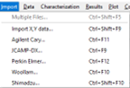

Import Menu
The Import Menu provides access to various options for importing measurement data:

File Import Options:
Multiple Files… (Shift+Ctrl+F5): Import multiple measurement files with automatic detection of file formats.
Spectra from Excel… (Shift+Ctrl+F6): Import spectra from Microsoft Excel with automated recognition of data layout.
Import X, Y Data… (Ctrl+Shift+F9): Allows importing two-column ASCII files into the Target database. Prompts for the name of a new target database file and opens an options dialog to adjust various settings.
Agilent Cary… (Ctrl+F11): Import data from Agilent Cary binary format files. After selecting a file in Agilent Cary format, you must choose the appropriate Agilent Cary options.
Zeiss Optoplex…: Import data from Zeiss Optoplex data files. Following the selection of a Zeiss Optoplex file, you will need to choose the appropriate import options.
Zeiss ThinProcess…: Import data from the Zeiss ThinProcess SQL Database.
JCAMP-DX… (Ctrl+F9): Import data in the JCAMP-DX format, commonly created by various spectrophotometers. Choose the appropriate JCAMP-DX options after opening a file in this format.
Perkin Elmer… (Ctrl+F12): Import data from Perkin Elmer binary format files. After opening a file, select the necessary Perkin Elmer options.
Hitachi… (Shift+Ctrl+F12): Import data from Hitachi spectrophotometers (models UH4150/U-4100).
JASCO… (Shift+F12): Import data from JASCO spectrophotometers.
Woollam… (Ctrl+F10): Import ellipsometric data in the format used by Woollam ellipsometers. Data should be organized in a six-column ASCII file format: Wavelength, Angle of Incidence, Psi, Delta, Tolerance for Psi, and Tolerance for Delta. Choose the relevant Woollam options after opening the file.
Horiba… (Shift+Ctrl+F10): Import ellipsometric data in the format used by Horiba ellipsometers. These files typically have a .spe extension.
Semilab - Sopra… (Shift+F10): Import ellipsometric data in the format used by Semilab - Sopra Spectroscopic Ellipsometers (SE), usually having a .pae file extension.
Sentech… (Ctrl+Shift+F11): Import ellipsometric data in the format used by Sentech Spectroscopic Ellipsometers, generally found in .txt file.